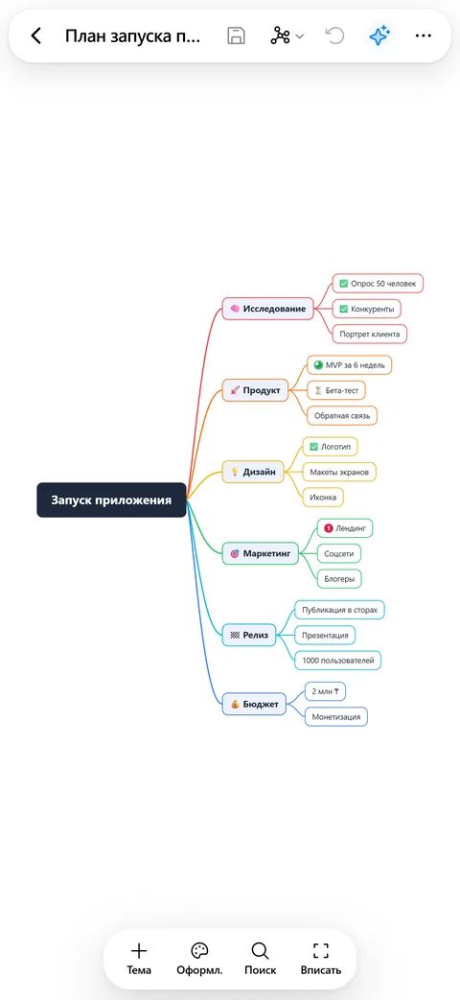
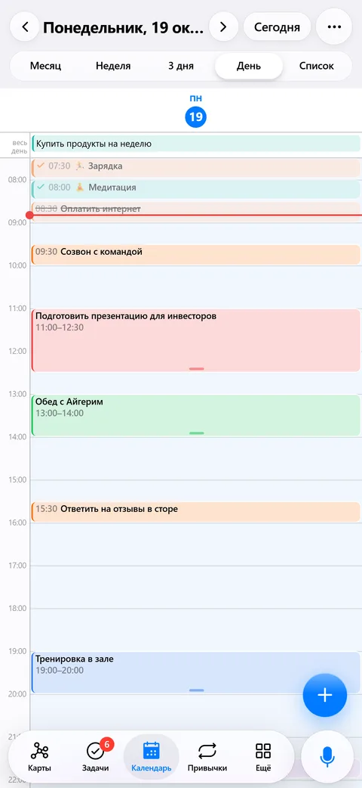
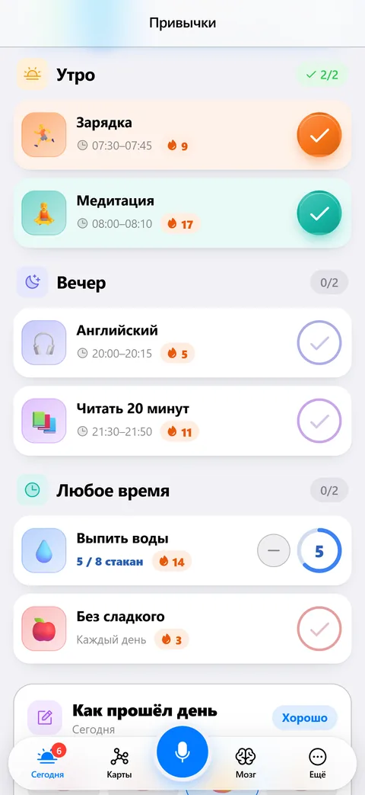
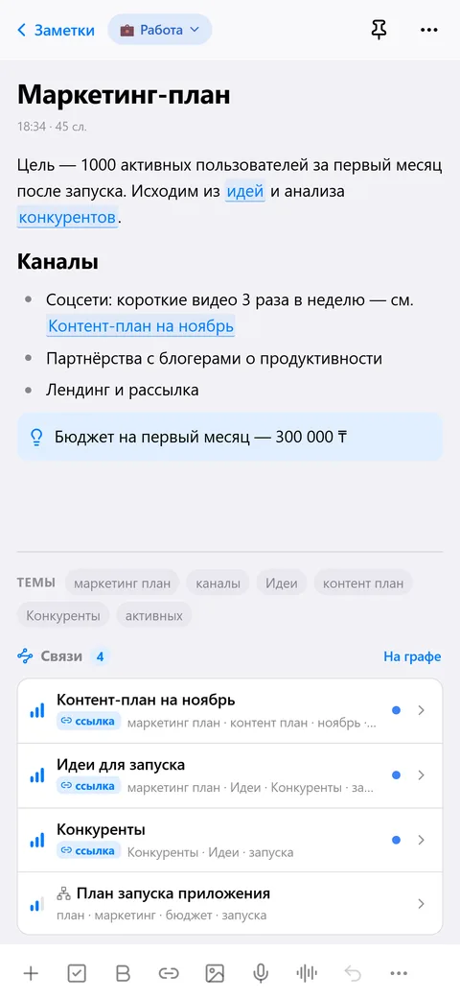
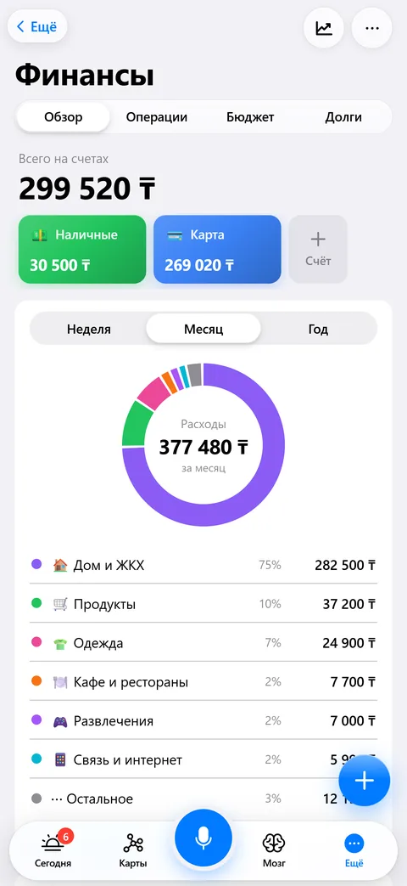

Карты, задачи и заметки — в одном приложении
Интеллект-карты, планер, второй мозг, привычки и личные финансы. Работает без интернета, без рекламы и без подписок.






Всё для того, чтобы думать и успевать
8 структур, темы оформления, связи и маркеры. Импорт и экспорт Xmind, PDF, Word, PowerPoint.
Умный ввод: «позвонить маме завтра в 18:30». Повторы, напоминания-будильники, канбан, помодоро.
Заметки со связями и графом, ежедневная заметка, карточки для повторения, статьи по ссылке.
Трекер привычек со стриками, настроение, дневник и цели с шагами.
Счета, траты и доходы, бюджеты, долги, подписки и аналитика.
Карта по идее, разбивка задачи на шаги, ответы по вашим заметкам и голосовые команды.
Всё хранится на устройстве и работает офлайн. Синхронизация между телефоном, компьютером и браузером — через ваш аккаунт. Никакой рекламы и трекеров. Политика конфиденциальности
Скачать
Скоро в App Store.
Скоро в Google Play. Пока можно установить APK-файл.
Скачать установщик для Windows 10 и 11.
Открыть SuperMind в любом браузере — на компьютере, Mac или Linux.